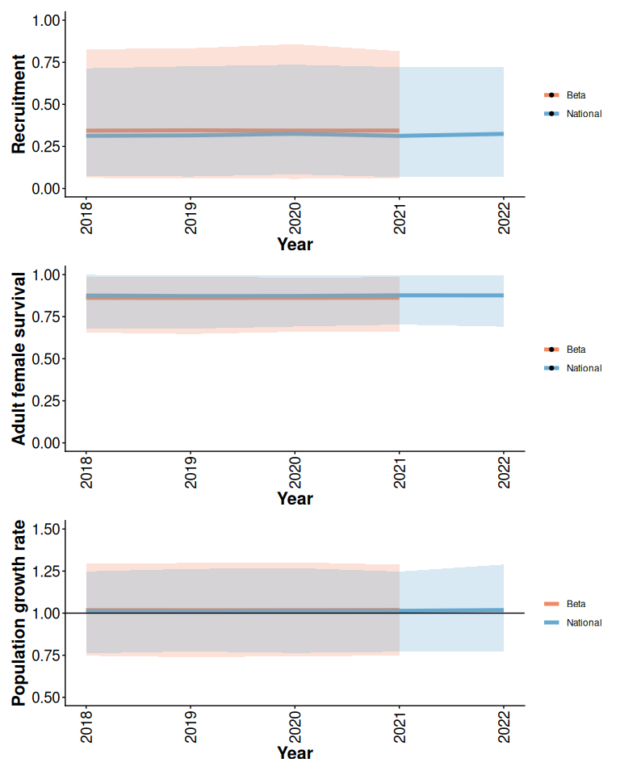
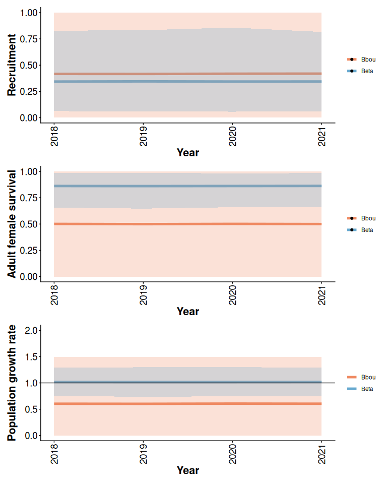
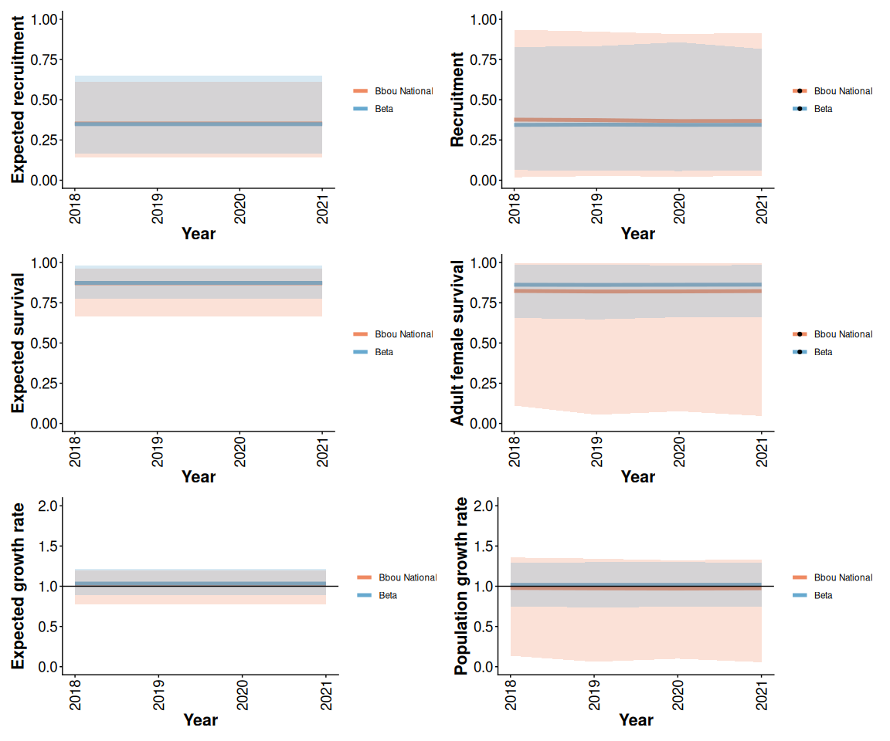
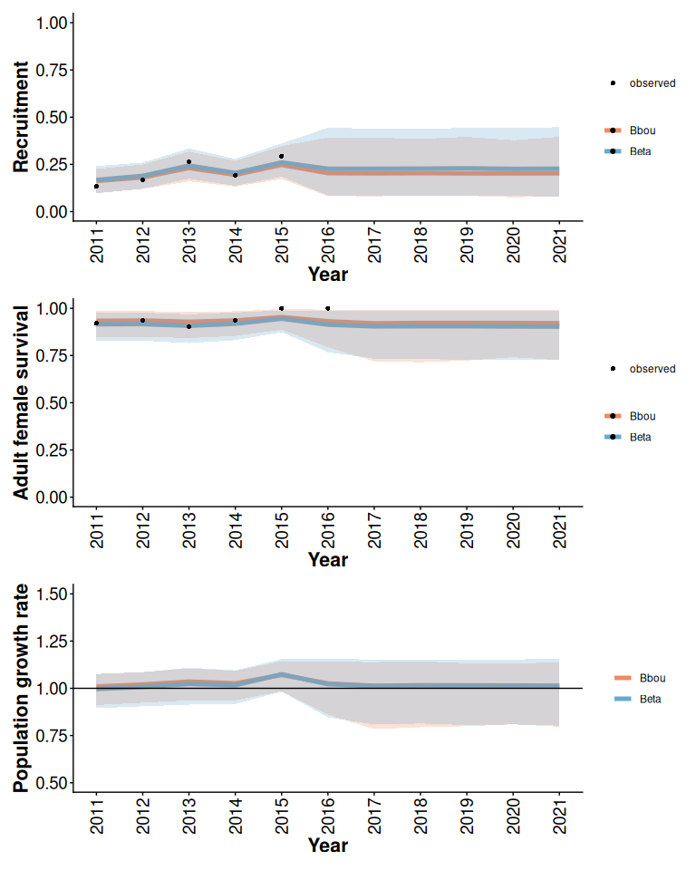
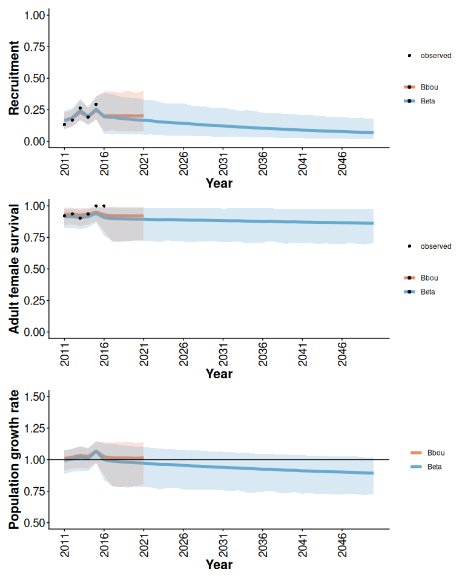
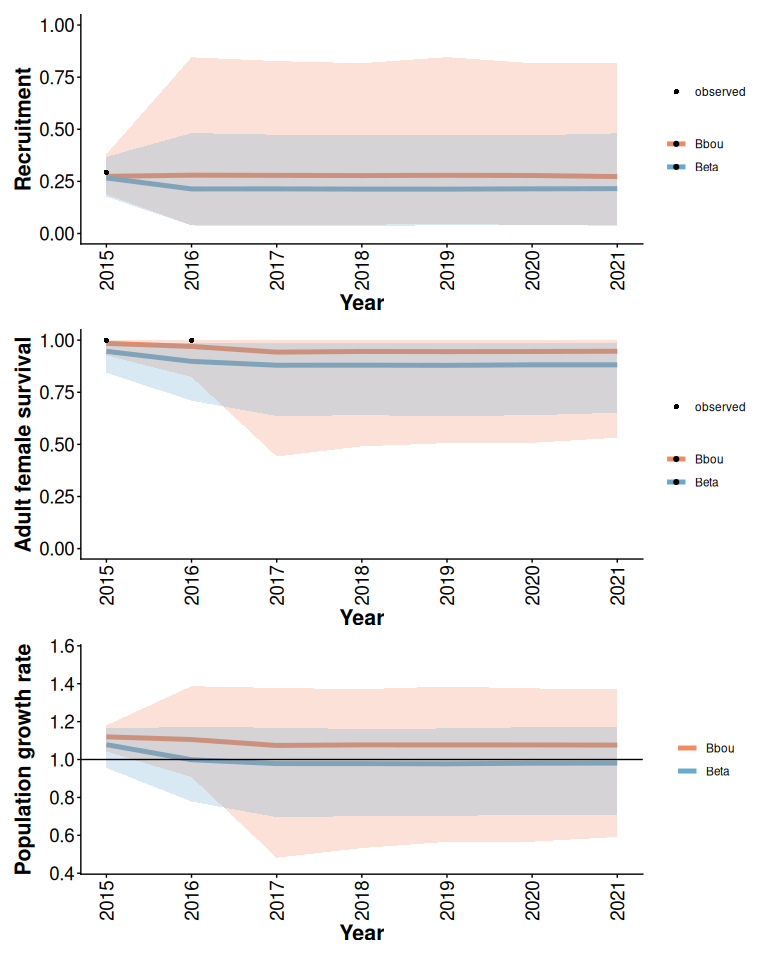

Comparing the caribouMetrics Beta model to bboutools models
Source:vignettes/compare-bayesian-models.Rmd
compare-bayesian-models.Rmd0.1 Similarities and differences between the caribouMetrics Beta model and the bboutools model
Hughes et al. (2025) described a Beta model with disturbance covariates and informative priors for analysis of a single boreal caribou population with survival data aggregated by year and only cows and calves reported in the composition survey. To align with and allow comparison to the models implemented in bboutools (Dalgarno et al. 2025) we extended the Hughes et al. (2025) models as follows:
- Allow analysis of composition survey data in bboutools form that includes Yearlings, Bulls, and UnknownAdults. See Analytic Methods for Estimation of Boreal Caribou Survival, Recruitment and Population Growth for details.
- Allow analysis of monthly survival data in bboutools form (e.g.
bboudata::bbousurv_a). - Allow for calculation of population growth rate without initial population size information. See Analytic Methods for Estimation of Boreal Caribou Survival, Recruitment and Population Growth for details.
- Allow for analysis of groups of populations with shared interannual variation. TO DO: add link to bboutools documentation when it exists.
Note that bboutools includes a number of different model variants. Throughout this document we compare to the Bayesian model with a random effect of year and no annual trend. For brevity, we refer to that as the “bbou” model.
Key remaining differences between the caribouMetrics Beta model and the bbou model include:
- The Beta model includes anthropogenic and fire disturbance covariates.
- The Beta model intercept and disturbance covariate slope parameters are informed by national demographic-disturbance relationships.
- The distribution of interannual variation differs between the models.
- The bbou model allows for variation in survival among months.
0.2 Example data
We compare the Beta and bbou models using three examples derived from the bboudata::bbousurv_a and bboudata::bbourecruit_a data sets:
- No local data: used to examine and compare prior predictions from the models.
- Informative local data: Observations from 2010 to 2016.
- Limited local data: Observations from 2014 to 2016.
To examine and compare predictions for unobserved years (2018 to 2021) we add missing data.
library(caribouMetrics)
# use local version on local and installed on GH
if (requireNamespace("devtools", quietly = TRUE)) devtools::load_all()
library(bboudata)
library(bboutools)
library(dplyr)
library(ggplot2)
library(patchwork)
figWidth <- 8
figHeight <- 10
useSaved <- T # option to skip slow step of fitting bboutools model
bbouInformativeFile <- here::here("results/vignetteBbbouExample.rds")
bbouLimitedFile <- here::here("results/vignetteBbbouExample2.rds")
bbouPriorFile <- here::here("results/vignetteBbbouExample1.rds")
bbouPriorNationalFile <- here::here("results/vignetteBbbouExample1p.rds")
betaAnthroFile <- here::here("results/betaAnthroExample.rds")
surv_data <- bboudata::bbousurv_a %>% filter(Year > 2010)
surv_data_add <- expand.grid(Year = seq(2017, 2022), Month = seq(1:12),
PopulationName = unique(surv_data$PopulationName))
surv_data <- merge(surv_data, surv_data_add, all.x = TRUE, all.y = TRUE)
surv_data$StartTotal[is.na(surv_data$StartTotal)] <- 1
recruit_data <- bboudata::bbourecruit_a %>% filter(Year > 2010)
recruit_data_add <- expand.grid(Year = seq(2017, 2022), PopulationName = unique(recruit_data$PopulationName))
recruit_data <- merge(recruit_data, recruit_data_add, all.x = TRUE, all.y = TRUE)
recruit_data$Month[is.na(recruit_data$Month)] <- 3
recruit_data$Day[is.na(recruit_data$Day)] <- 15
surv_dataNone <- surv_data %>% filter(Year > 2017)
recruit_dataNone <- recruit_data %>% filter(Year > 2017)
surv_dataLimited <- surv_data %>% filter(Year > 2014)
recruit_dataLimited <- recruit_data %>% filter(Year > 2014)0.3 Comparison of the Beta and national models
As shown by Hughes et al. (2025) the prior means and 95% prior predictive intervals from the Beta model are similar to the means and ranges between the 2.5% and 97.5% quantiles of 3000 simulated survival and recruitment trajectories from the national model (Figure 1).
disturbance <- data.frame(Year = unique(surv_data$Year), Anthro = 5,
fire_excl_anthro = 1)
betaPrior <- caribouBayesianPM(surv_dataNone, recruit_dataNone, disturbance)
simNational <- getSimsInitial(disturbance)
out_tbls <- getOutputTables(betaPrior, simInitial = simNational)
typeLabs <- c("Beta", "National")
rec <- plotRes(out_tbls, "Recruitment", typeLabels = typeLabs)
surv <- plotRes(out_tbls, "Adult female survival", typeLabels = typeLabs)
lam <- plotRes(out_tbls, "Population growth rate", typeLabels = typeLabs,
lowBound = 0.5, highBound = 1.5)
rec / surv / lam
Figure 1: 95% prior predictive intervals from Beta model with 5% anthropogenic disturbance, default priors, and no local data compared to simulations from the national model.
0.4 Comparison of Beta and bbou prior predictions
The bbou model default priors are less informative than the Beta model default priors (Figure 2). The bbou model assumes that little is known about a population with no local data, whereas when there is no local data the Beta model assumes that local recruitment and survival rates are within the range of variation among boreal caribou populations there were included in the national model.
if (useSaved & file.exists(bbouPriorFile)) {
bbouPrior <- readRDS(bbouPriorFile)
} else {
bbouPrior <- bbouMakeSummaryTable(surv_dataNone, recruit_dataNone,
return_mcmc = TRUE)
if (dir.exists(dirname(bbouPriorFile))) {
saveRDS(bbouPrior, bbouPriorFile)
}
}
simBbouPrior <- getSimsInitial(bbouPrior)
out_tbls <- getOutputTables(betaPrior, simInitial = simBbouPrior)
typeLabs <- c("Beta", "Bbou")
rec <- plotRes(out_tbls, "Recruitment", typeLabels = typeLabs)
surv <- plotRes(out_tbls, "Adult female survival", typeLabels = typeLabs)
lam <- plotRes(out_tbls, "Population growth rate", typeLabels = typeLabs,
lowBound = 0, highBound = 2)
rec / surv / lam
Figure 2: Prior means and 95% predictive intervals from Beta and bbou models with 5% anthropogenic disturbance and default priors.
The bbou priors can be set to (approximately) match the Beta model priors. When disturbance is constant, the models with informative priors make similar prior predictions of expected demographic rates. The bbou model assumes more prior uncertainty about interannual variation, so prior predictions of the distribution of observed demographic rates in each year continue to differ. TODO explain what expected demographic parameters are and how they are different from the plots shown on the right.
b0Priors <- getBBNationalInformativePriors(Anthro = unique(disturbance$Anthro), fire_excl_anthro = unique(disturbance$fire_excl_anthro), month = TRUE)
if (useSaved & file.exists(bbouPriorNationalFile)) {
bbouPriorNational <- readRDS(bbouPriorNationalFile)
} else {
bbouPriorNational <- bbouMakeSummaryTable(surv_dataNone, recruit_dataNone,
return_mcmc = TRUE, priors = b0Priors)
if (dir.exists(dirname(bbouPriorNationalFile))) {
saveRDS(bbouPriorNational, bbouPriorNationalFile)
}
}
simBbouPriorNational <- getSimsInitial(bbouPriorNational)
out_tbls <- getOutputTables(betaPrior, simInitial = simBbouPriorNational)
typeLabs <- c("Beta", "Bbou National")
recBar <- plotRes(out_tbls, "Expected recruitment", typeLabels = typeLabs)
rec <- plotRes(out_tbls, "Recruitment", typeLabels = typeLabs)
survBar <- plotRes(out_tbls, "Expected survival", typeLabels = typeLabs)
surv <- plotRes(out_tbls, "Adult female survival", typeLabels = typeLabs)
lamBar <- plotRes(out_tbls, "Expected growth rate", typeLabels = typeLabs,
lowBound = 0, highBound = 2)
lam <- plotRes(out_tbls, "Population growth rate", typeLabels = typeLabs,
lowBound = 0, highBound = 2)
(recBar + rec) / (survBar + surv) / (lamBar + lam)
Figure 3: Prior means and 95% predictive intervals from Beta and bbou models with 5% anthropogenic disturbance and priors informed by national demographic-disturbance relationships.
0.5 Comparison of Beta and bbou models with informative local data
With more informative data, the Beta model with constant disturbance covariates and informative priors often gives results that are comparable to the bbou model with default (less informative) priors. When there is enough local data available differences in the priors are less important.
betaInformative <- caribouBayesianPM(surv_data, recruit_data, disturbance)
if (useSaved & file.exists(bbouInformativeFile)) {
bbouInformative <- readRDS(bbouInformativeFile)
} else {
bbouInformative <- bbouMakeSummaryTable(surv_data, recruit_data,
return_mcmc = TRUE)
if (dir.exists(dirname(bbouInformativeFile))) {
saveRDS(bbouInformative, bbouInformativeFile)
}
}
simBbouInformative <- getSimsInitial(bbouInformative)
out_tbls <- getOutputTables(betaInformative, simInitial = simBbouInformative)
typeLabs <- c("Beta", "Bbou")
rec <- plotRes(out_tbls, "Recruitment", typeLabels = typeLabs)
surv <- plotRes(out_tbls, "Adult female survival", typeLabels = typeLabs)
lam <- plotRes(out_tbls, "Population growth rate", typeLabels = typeLabs,
lowBound = 0.5, highBound = 1.5)
rec / surv / lam
Figure 4: Posterior means and 95% posterior predictive intervals from Beta and bbou models with 5% anthropogenic disturbance, default priors, and informative local data.
The bbou model does not include disturbance covariates, so we expect the models to project different outcomes in a case where disturbance changes over time.
disturbance <- data.frame(Year = seq(2011, 2051),
Anthro = seq(20, 2 * 40 + 20, length.out = 41),
fire_excl_anthro = 1)
if (useSaved & file.exists(betaAnthroFile)){
betaAnthroChange <- readRDS(betaAnthroFile)
} else {
betaAnthroChange <- caribouBayesianPM(surv_data, recruit_data, disturbance)
if(dir.exists(dirname(betaAnthroFile))){
saveRDS(betaAnthroChange, betaAnthroFile)
}
}
if (useSaved & file.exists(bbouInformativeFile)) {
bbouInformative <- readRDS(bbouInformativeFile)
} else {
bbouInformative <- bbouMakeSummaryTable(surv_data, recruit_data,
return_mcmc = TRUE)
if (dir.exists(dirname(bbouInformativeFile))) {
saveRDS(bbouInformative, bbouInformativeFile)
}
}
simBbouInformative <- getSimsInitial(bbouInformative)
out_tbls <- getOutputTables(betaAnthroChange, simInitial = simBbouInformative)
typeLabs <- c("Beta", "Bbou")
rec <- plotRes(out_tbls, "Recruitment", typeLabels = typeLabs,
breakInterval = 5)
surv <- plotRes(out_tbls, "Adult female survival", typeLabels = typeLabs,
breakInterval = 5)
lam <- plotRes(out_tbls, "Population growth rate", typeLabels = typeLabs,
lowBound = 0.5, highBound = 1.5, breakInterval = 5)
rec / surv / lam 
Figure 5: Posterior means and 95% posterior predictive intervals from Beta and bbou models with default priors, informative local data, and anthropogenic disturbance increasing from 20 to 100% over 40 years.
0.6 Comparison of Beta and bbou models with limited local data
If local data is limited the bbou model with default (less informative) priors and the Beta model with disturbance covariates and informative priors may also give different results, particularly if observations are inconsistent with expectations from the observed distribution of outcomes across the country. For example (Figure 6) when disturbance is high the prior expectation from the Beta model is that recruitment and survival will be low. In this example there are a couple of observations of survival and recruitment that are higher than expected given knowledge of disturbance. Both models acknowledge high uncertainty about the true state of the population given limited local data. The Beta model predicts lower growth than the bbou model in this case because it is combining the limited local information with a prior expectation that demographic rates will be low when disturbance is high.
disturbance <- data.frame(Year = unique(surv_data$Year), Anthro = 90, fire_excl_anthro = 5)
betaLimited <- caribouBayesianPM(surv_dataLimited, recruit_dataLimited, disturbance)
if (useSaved & file.exists(bbouLimitedFile)) {
bbouLimited <- readRDS(bbouLimitedFile)
} else {
bbouLimited <- bbouMakeSummaryTable(surv_dataLimited, recruit_dataLimited,
return_mcmc = TRUE)
if (dir.exists(dirname(bbouLimitedFile))) {
saveRDS(bbouLimited, bbouLimitedFile)
}
}
simBbouLimited <- getSimsInitial(bbouLimited)
out_tbls <- getOutputTables(betaLimited, simInitial = simBbouLimited)
typeLabs <- c("Beta", "Bbou")
rec <- plotRes(out_tbls, "Recruitment", typeLabels = typeLabs)
surv <- plotRes(out_tbls, "Adult female survival", typeLabels = typeLabs)
lam <- plotRes(out_tbls, "Population growth rate", typeLabels = typeLabs,
lowBound = 0.45, highBound = 1.55)
rec / surv / lam
Figure 6: Posterior means and 95% predictive intervals from Beta and bbou models with 90% anthropogenic disturbance, default priors, and limited local data.